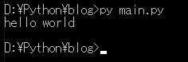
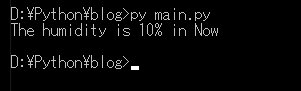
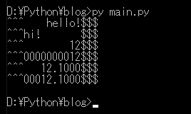
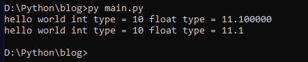
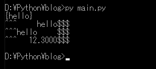

[Python] 20. stringフォマード(Formatting)と補間法(interpolation)
こんにちは。明月です。
この投稿はPythonでstringフォーマッティング(Formatting)と補間法(interpolation)に関する説明です。
stringフォーマッティングは定数タイプなどを文字列タイプに変換することやstringのデータタイプにstringの値を入れるような方法です。
フォーマッティングはパーセント(%)を利用します。パーセント(%)の前はformat文字列、後は置換する値を設定します。
最終結果はイコールで左の変数に格納されます。
# フォーマッティング
# worldのデータが%sに置換する。
data = "hello %s" % "world"
# コンソール出力
print(data)

フォーマッティングの文字列で置換領域もパーセント(%)で区分します。そしてパーセント(%)の後は置換値のタイプによるコードを入力します。
置換値は複数(2個以上)ならタプルで入力します。
| コード | 説明 |
|---|---|
| %s | 文字列(String) |
| %c | 文字一つ(character) |
| %d | 定数(Integer) |
| %f | 浮動小数点(floating-point) |
| %o | 8進数 |
| %x | 16進数 |
# フォーマッティング、%dは数字、%sは文字列です。
data = "The humidity is %d%% in %s" % (10, 'Now')
# コンソール出力
pritn(data)

stringタイプでフォーマッティングではなく本当にパーセント(%)を使いたい時があります。その時にはパーセント(%)を二つ入れることで入力します。
pythonはフォーマッティングで文字列整列も可能です。
# 10間の文字列空間を右揃えにする。 もし10間以上になると整列を取り消しする。
print("^^^%10s$$$" % "hello!")
# 10間の文字列空間を左揃えにする。もし10間以上になると整列を取り消しする。
print("^^^%-10s$$$" % "hi!")
# 10間の文字列空間を右揃えにする。 もし10間以上になると整列を取り消しする。(定数タイプ)
print("^^^%10d$$$" % 12)
# 10間の文字列空間を右揃えにする。空間は0にする。(定数タイプ)
print("^^^%010d$$$" % 12)
# 10間の文字列空間を右揃えにする。そして実数の小数点4番目まで表現する。もし10間以上になると整列を取り消しする。(実数タイプ)
print("^^^%10.4f$$$" % 12.1)
# 10間の文字列空間を右揃えにする。そして実数の小数点4番目まで表現する。空間は0にする。(実数タイプ)
print("^^^%010.4f$$$" % 12.1)

補間法とはフォーマッティングする文法でもっと見やすくするための文法です。
例えば置換するデータが多い時に置換場所を迷う時があります。
# 変数宣言
data1 = 'hello'
data2 = 'world'
data3 = 'int'
data4 = 10
data5 = 'float'
data6 = 11.1
data7 = 'type'
# 一般フォーマッティングをコンソールに出力する。
print('%s %s %s %s = %d %s %s = %f' % (data1,data2,data3,data7,data4,data5,data7,data6))
# 補間法をコンソールに出力する。
print(f'{data1} {data2} {data3} {data7} = {data4} {data5} {data7} = {data6}')

補間法は文字列の表現するダブルクォートやクォートの前でfを付けます。そうすると領域中では中括弧で直接にフォーマッティングを作成することができます。
# 変数宣言
data = "hello";
# {の表示は{{、}の表示は}}にする。補間法は{data}でdataの変数の値を出力する。
print(f'{{{data}}}')
# 10間の文字列空間を右揃えにする。 もし10間以上になると整列を取り消しする。
print(f'^^^{data:>10}$$$')
# 10間の文字列空間を左揃えにする。もし10間以上になると整列を取り消しする。
print(f'^^^{data:<10}$$$')
data = 12.3
# 文字列に整列をする。(整列や0置換は上のフォーマッティングと同じ)
print(f'^^^{data:10.4f}$$$')

stringフォマード(Formattingと補間法(interpolation)に関して各長所、短所がありますが、私の場合は補間法(interpolation)のほうが見やすいのでよく使います。
ここまでPythonでstringフォマード(Formatting)と補間法(interpolation)に関する説明でした。
ご不明なところや間違いところがあればコメントしてください。
- [Python] 21. データベース(mariaDB)を連結する方法2020/06/24 18:51:50
- [Python] 20. stringフォマード(Formatting)と補間法(interpolation)2020/06/23 19:03:21
- [Python] 19. 非同期IOのasync/await(asyncio)を使う方法2020/06/22 18:10:12
- [Python] 18. ネットワーク(Socket)通信する方法2020/06/18 19:53:56
- [Python] 17. スレッド(Thread)とロック(lock)、そしてデッドロック(deadlock)2020/06/18 00:19:45
- [Python] 16. IO(ファイル読み取り、書き込み)を扱う方法2020/06/16 18:37:00
- [Python] 15. クラスを継承する方法2020/06/15 18:20:07
- [Python] 14. クラスプロパティ(Property)2020/06/12 17:45:13
- [Python] 13. クラス関数(class method)とダック・タイピング、そして特殊メソッド2020/06/11 19:42:29
- [Design pattern] 2-6. プロキシパターン(Proxy pattern)2021/11/01 19:42:44
- [Design pattern] 2-5. フライウェイトパターン(Flyweight pattern)2021/10/29 19:48:27
- [C#] 59. ウィンドウフォーム(Window form)にコントロール(Control)を使い方法2021/10/29 19:45:43
- [Design pattern] 2-4. デコレーターパターン(Decorator pattern)2021/10/28 20:11:13
- [C#] 58. ウィンドウフォーム(Window form)を作成する方法、そしてウィンドウメッセージとキュー2021/10/27 20:35:44
- [Design pattern] 2-3. ブリッジパターン(Bridge pattern)2021/10/27 20:32:21
- [Design pattern] 2-2. コンポジットパターン(Composite pattern)2021/10/27 20:30:54
- [Design pattern] 2-1. アダプターパターン(Adapter pattern)2021/10/26 19:12:40
- [Project design] プログラム最終テスト - ST(System test(Standard, Scenario))2021/10/26 19:10:07
- [Project design] プログラム結合テスト - IT(Integration test)2021/10/25 20:12:17
- [Python] Seleniumライブラリを使う方法(自動ウェブテスト、ウェブスクレイピング)2021/10/25 19:29:00
- [Design pattern] 1-5. プロトタイプパターン(Prototype pattern)2021/10/22 19:35:45
- [Project design] プログラム検証とテスト - Unitテスト2021/10/22 19:34:09
- [C#] 57. コーティング規約2021/10/21 18:57:02
- [C#] 56. 値の初期化及び基本データ値(default)を設定する方法、そして原始データのnull処理、?と??の使い方2021/10/21 18:54:41